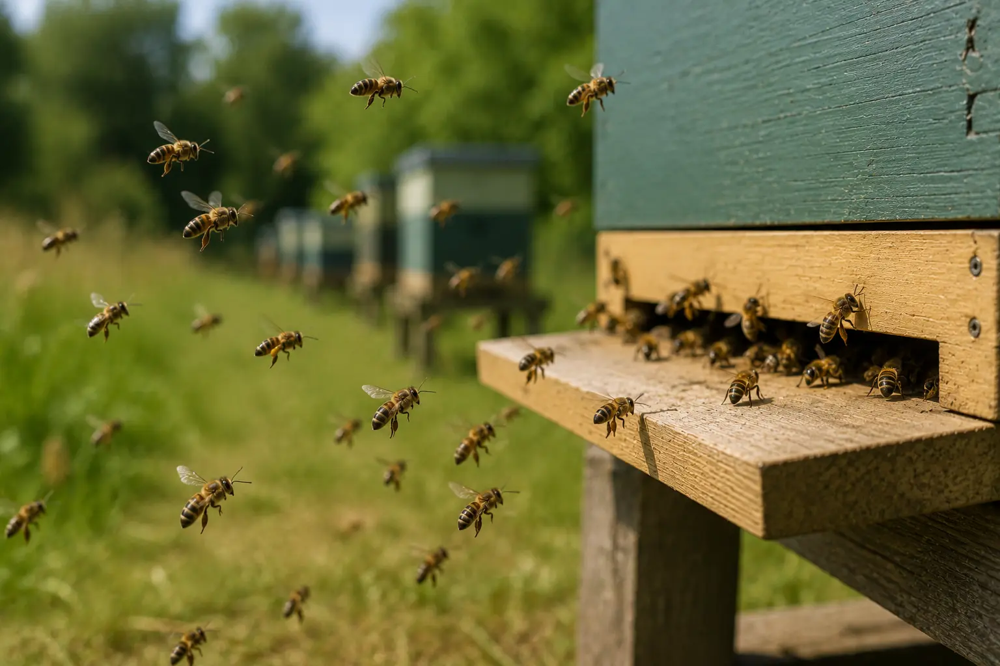

Normal young bee behaviour
Bee Orientation Flights – What They Look Like and When To Worry
Last updated: 1 May 2026

Orientation flights are short learning flights made by young worker bees as they learn where the hive is. They can look busy and dramatic, especially if many young bees fly at the same time, but they are usually a normal and positive sign.
During an orientation flight, bees often face the hive while flying in loops, arcs or small circles close to the entrance. They are not trying to leave the colony. They are memorising the entrance, hive position and surrounding landmarks so they can find their way home later.
The main challenge for new beekeepers is telling orientation flights apart from robbing, swarming or panic activity. The clues are in the behaviour, timing and what is happening at the entrance.
What are orientation flights?
Orientation flights happen when young worker bees begin to take their first flights outside the hive. Before they become regular foragers, they need to learn the exact position of the entrance and the visual landmarks around it.
The bees may hover in front of the hive, drift from side to side, rise and fall, or fly short loops while facing back towards the entrance. This facing-back behaviour is one of the strongest clues that the activity is normal orientation rather than robbing.
Orientation flights are also common after a hive or nuc has been moved, because bees need to re-learn their surroundings.
What orientation flights look like
Normal orientation flights look busy but not aggressive. Bees are usually concentrated close to the hive front and may appear to hover, circle or zig-zag gently in front of the entrance. They are often facing the hive rather than trying to force their way inside.
There should not be fighting at the entrance, dead bees piling up, wax debris, torn cappings or bees wrestling on the landing board. Those signs point more towards robbing or another problem.
Orientation activity normally settles down after a short period. The hive should return to normal entrance traffic once the young bees have finished their learning flights.
When do orientation flights happen?
Orientation flights are most often seen on warm, calm days, commonly around late morning or early afternoon when conditions are suitable for young bees to fly. They may be more noticeable after a spell of poor weather because bees that have been waiting inside may fly together once the weather improves.
They can also become obvious during periods when lots of young bees are emerging from brood. A growing colony may therefore show repeated bursts of orientation activity over several days.
If you have recently moved a hive or installed a nuc, you may see bees reorientating as they learn the new location.
Orientation flights vs robbing
Orientation flights are often mistaken for robbing because both can involve lots of bees around the entrance. The difference is that orientation flights are calm, local and short-lived, while robbing is more frantic and aggressive.
During robbing, bees may dart quickly at the entrance, fight with guard bees, search for gaps, force their way into the hive or leave wax debris from torn stores. The colony may sound unsettled and defensive.
If you see fighting, wax crumbs, dead bees or wasps joining the activity, compare the signs with robbing behaviour in bees.
Orientation flights vs swarming
Swarming is very different from orientation. A swarm usually involves a much larger, louder cloud of bees leaving the hive with the queen and eventually settling away from the hive.
Orientation flights stay close to the hive and the bees return inside. They are usually made by young bees learning the entrance, not by the whole colony preparing to leave.
If the colony is very crowded, has queen cells, or bees are pouring out in a large airborne cloud, check your swarm and queen guides rather than assuming it is only orientation.
Orientation flights vs absconding
Absconding means the colony leaves the hive entirely. This is uncommon in normal UK beekeeping compared with orientation flights, but the difference matters. In orientation flights, the bees return to the hive. In absconding, the hive may become empty or almost empty.
If activity outside the hive is followed by a sudden loss of bees, an empty box, abandoned comb or no normal colony presence, that is not normal orientation. In that case, read the guide to an empty hive with no bees.
When orientation flights are a good sign
Orientation flights usually suggest that young bees are emerging and joining the workforce. This is a positive sign in a developing colony, especially when it matches what you have seen during inspections, such as healthy brood, emerging bees and normal stores.
If the colony has a steady brood pattern, normal entrance activity and no signs of fighting or disease, orientation flights are simply part of the colony’s normal rhythm.
When to be concerned
You should look more closely if the activity includes fighting, dead bees, wax debris, bees crawling on the ground, wasps or hornets attacking bees, or large numbers of bees leaving and not returning.
Concern is also justified if the colony becomes suddenly quiet afterwards, if the hive appears empty, or if the activity is linked with obvious robbing behaviour.
If bees are crawling or dying, see why bees are crawling on the ground and dead bees outside the hive.
What should you do?
If the activity looks like normal orientation, you usually do not need to do anything. Watch for a few minutes and check whether the bees are facing the hive, staying close to the entrance and returning inside.
Do not block the entrance and do not open the hive during heavy activity unless there is a good reason. Opening the hive can add stress and make the behaviour harder to interpret.
If you are unsure, look for the warning signs first: fighting, dead bees, wax debris, wasps, hornets, crawling bees or bees failing to return.
How HiveTag can help
Recording normal behaviour such as orientation flights can help you understand each colony better. If you note the weather, time of day and recent brood status, you can start to recognise what is normal for that hive.
HiveTag inspection notes make it easier to compare activity, brood emergence, weather and seasonal changes over time.
Learn more about HiveTag.
Bee Orientation Flights FAQ
Yes. Orientation flights are normal behaviour and usually mean young bees are learning the hive location before becoming regular foragers.
They are usually short-lived and often settle down after a brief period, although timing can vary with weather, colony size and the number of young bees flying.
No. Orientation flights are different from swarming. Bees usually stay close to the hive, face the entrance and return inside.
They are learning the hive entrance and nearby landmarks so they can find their way back later after foraging.